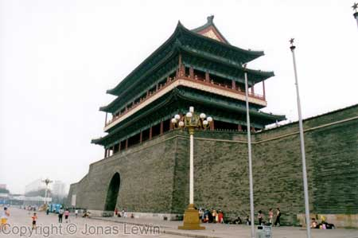
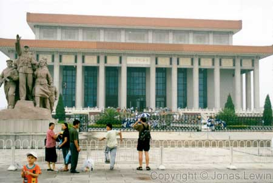
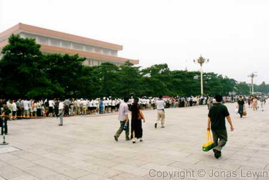
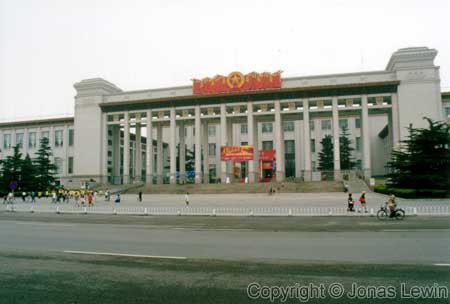
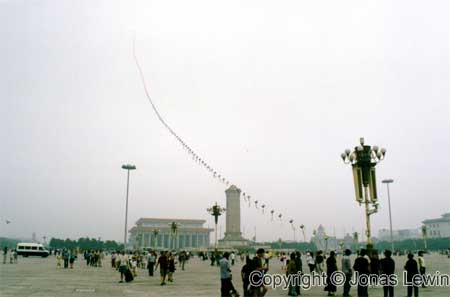
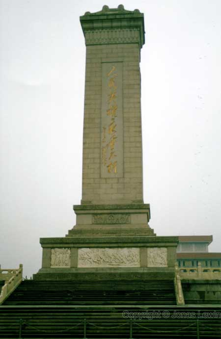
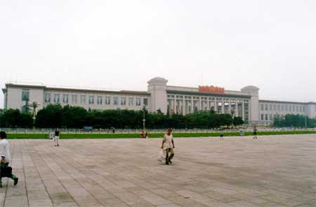
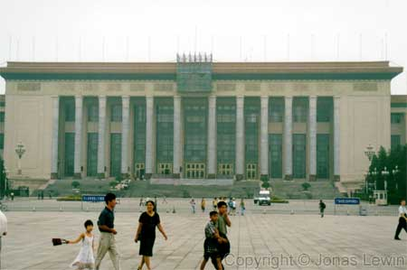

Thiamin Square.
For most people, associated with the massacre of protesting students.
This
is part of the old wall surrounding the Forbidden City.
Inside
the square, the famous Mausoleum is located. Many Chinese (and other)
tourists wants to go in here.
As
I said... Many Chinese people wants to se Chairman Mao's grave. For once the
Chinese people I met, was able to stand in line in an orderly fashion.
Normally, like on the bus, everybody had to fight over who should get in
first, even if there was space enough for everyone.



I heard that Thiamin Square once was filled with governmental buildings. But
someone decided that these buildings where no longer necessary, and they
where torn down to make this large empty space.

|